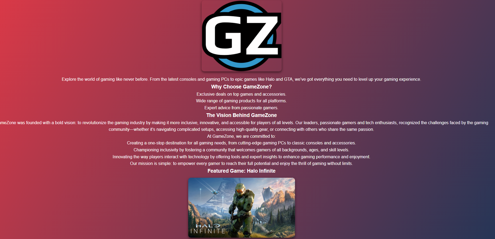
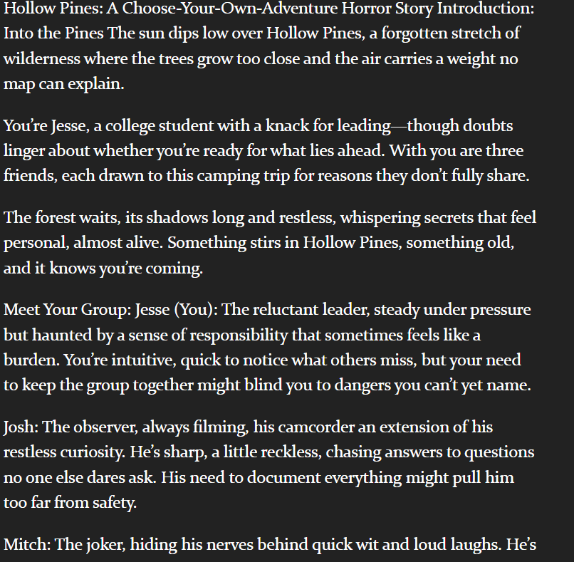
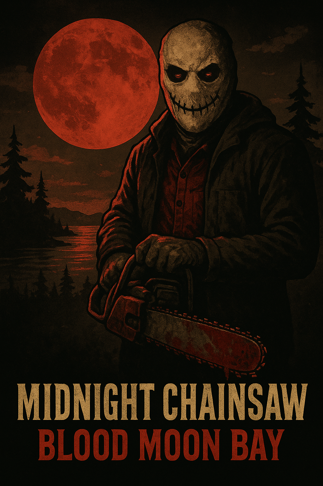

Designing immersive experiences through technology and narrative
I’m Jesse Brown — a Media Arts & Game Development major and Cybersecurity Club Officer at UW–Whitewater.
My work explores how technology, storytelling, and user-centered design intersect to create interactive, meaningful experiences.
Through projects that merge creativity and logic — from narrative horror design to web development and documentation —
I aim to bridge the gap between artistic storytelling and technical systems.
Projects
Each project reflects my ability to think critically, communicate through design, and apply both creative and analytical skills —
all of which align with my goal of pursuing graduate studies in Information Science and Human-Centered Design.

GameZone — Gaming Website
GameZone is a responsive front-end website showcasing gaming culture and design accessibility.
Built using HTML and CSS, it emphasizes layout optimization, usability, and aesthetic structure.
It demonstrates not only my web development skills but also my ability to balance user experience and visual communication —
a skill essential in UX and information design graduate programs.
Through this project, I strengthened my understanding of responsive design, semantic HTML, accessibility standards,
and how to translate user needs into intuitive digital interfaces.
HTMLCSSUX/UIAccessibility

Hollow Pines — Interactive Horror Narrative
Hollow Pines is a Twine-based psychological horror game set in a fog-covered town haunted by guilt and memory.
The player’s decisions directly shape multiple outcomes, encouraging reflection and emotional tension.
Built with custom CSS effects and branching story logic, this project taught me how to structure complex user pathways,
manage emotional pacing, and create interactive systems that evoke empathy and curiosity.
This project aligns with my graduate focus on narrative systems, interactive storytelling, and information structure —
using design thinking to organize choice-based content in meaningful and emotionally resonant ways.
TwineNarrative DesignInteractive FictionHorror

Midnight Chainsaw: Blood Moon Bay — Game Design Document
Midnight Chainsaw: Blood Moon Bay is a complete Game Design Document (GDD) for a VHS-inspired slasher horror game.
It includes detailed sections on gameplay systems, player psychology, killer AI logic, environmental design, and a DLC roadmap.
This project demonstrates my ability to organize complex ideas, develop functional frameworks, and write professional documentation —
critical skills for graduate-level study in Human-Centered Computing, Game Studies, and Information Management.
By breaking down how emotion, pacing, and logic interact in gameplay, I applied both creative and analytical reasoning —
the same interdisciplinary thinking I plan to expand in graduate school.
Read the Full GDD
GDDSystems DesignDocumentationGame Design
Graduate School Goals
My academic goal is to pursue a Master’s in Information with a concentration in User Experience and Digital Design —
particularly through programs like UW–Madison’s iSchool, which emphasize creative technology, human-centered computing, and interactive media.
The foundation I’ve built in the Media Arts & Game Development program has prepared me for advanced research and design work.
My coursework and independent projects combine narrative and technical literacy — from programming and prototyping to writing and storytelling.
I’m especially interested in exploring how design choices influence user behavior, accessibility, and digital culture.
Graduate study will allow me to merge these disciplines further, contributing to projects in UX strategy, interactive systems, and emerging technologies.
Each portfolio piece demonstrates the values I plan to carry forward: creativity, empathy, technical precision, and collaborative innovation.
Skills & Tools
Technical: C++, HTML, CSS, JavaScript, Arduino/CPE
Design: Twine, Figma, Adobe Photoshop, Illustrator, Canva
Creative: Interactive storytelling, narrative logic, writing, and documentation
Professional: Git, Visual Studio Code, Google Suite, Project Collaboration
Focus: UX/UI Design, Information Architecture, Game Systems, and Narrative Integration